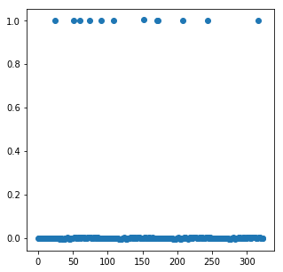
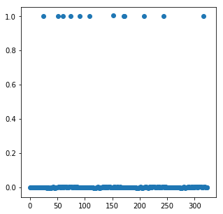

Optimal parade route¶
Topic references¶
- Iterated weighted :math:ell_1` heuristic <http://stanford.edu/class/ee364b/lectures/l1_ext_slides.pdf>`__
Problem statement¶
In this notebook, we’ll tackle the problem of trying to protect a parade route by placing a limited number of guards.
The parade route is discritized into \(m\) points. There are \(n\) possible guard locations with associated decision variable \(x \in \lbrace 0,1\rbrace^n\), where \(x_i = 1\) if and only if a guard is placed at location \(i\). Associated with guard location \(i\) is a coverage vector \(a_i \in \mathbf{R}^m\), which describes how well a guard placed at location \(i\) would ‘cover’ each point in the parade route. We will assume that guard coverage is additive, so that the vector describing the total coverage of every edge is given by \(Ax\), where \(A \in \mathbf{R}^{m \times n}\) has \(a_i\) as its \(i\)th column.
The parade route is only as secure as its least well-covered point. Our goal is to place \(k\) guards to maximize the minimum coverage over the points in the route.
Optimization formulation¶
We can formulate this as the optimization problem
\[ ]
This problem is nonconvex and, in general, NP-hard due to the Boolean decision variable.
Relaxation¶
We can try to approach the problem with convex optimization by first forming the convex relaxation
\[ ] by constraining \(x \in [0,1]^n\).
In general, the solution to this problem, \(x^\star\), will have fractional values. As we want a Boolean allocation, we can use an iterated weighted :math:ell_1` heuristic <http://stanford.edu/class/ee364b/lectures/l1_ext_slides.pdf>`__ to try to recover a Boolean solution.
Iterated weighted \(\ell_1\) heuristic¶
To try and recover a Boolean solution, we will solve a sequence of convex problems where we add a linear term \(-w^Tx\) to the objective, picking the weight vector \(w \in \mathbf{R}^n_+\) at each iteration to try and induce a sparse solution vector \(x^\star\). The details can be found in the Stanford EE364B lecture notes.
The algorithm consists of initializing \(w = 0\) and repeating the two steps
- \[ ]
- Let \(w_i = \alpha/(\tau + x_i) \forall i\)
until we reach a Boolean solution. Here, \(\alpha\) and \(\tau\) are adjusted to promote a sparse solution. Typical choices would be \(\alpha = 1\) and \(\tau = 10^{-4}\).
Intuitively, the weight vector \(w\) is incentivizing elements of \(x\) which were close to zero in the last iteration towards zero in the next iteration.
Example¶
We create a parade route in the unit square \([0,1] \times [0,1]\) by generating points along a connected sequence of line segments. Possible guard locations are a set of randomly placed points in the unit square. Guards’ coverage of points in the parade route is a function of distance between the two points. We also add buildings in the unit square to obstruct the guards’ view. The guard has no effect on a point if his line of sight is obstructed. We generate the \(A\) matrix for this problem instance below.
[<matplotlib.lines.Line2D at 0x105d17cc0>]

We perform the iterative algorithm below. At each step, we plot the vector \(x\), demonstrating that it becomes increasingly sparse at each iteration.
final objective value: -10.27091799207174

 

Below, we plot the final Boolean allocation. The blue dots represent the parade route. The red dots represent the possible guard placement locations. The green dots show the actual guard placements. Yellow rectangles are buildings which obstruct the guards’ view.
[<matplotlib.lines.Line2D at 0xb1853f1d0>]